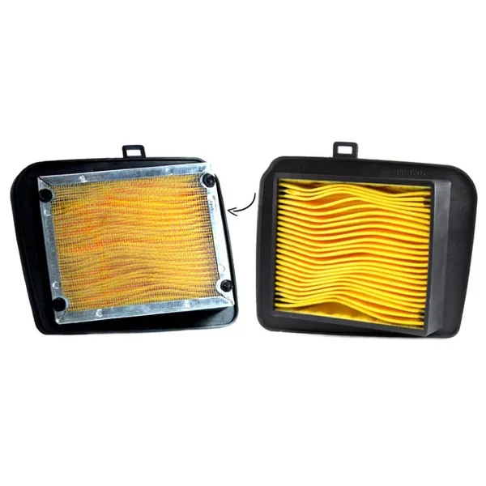
Grande Vitória, ES
Filtro de moto com entrega hoje na Grande Vitória
85 peças: filtro de ar, de óleo e de combustível. Entrega por motoboy no mesmo dia em Vitória, Vila Velha, Serra, Cariacica, Viana, para pedido até 12h. Pagamento no Pix. Troca grátis em 7 dias se não servir.
Escolha pela moto
CG 160CG 150CG 125BizPopBros 160Bros 150Fazer 150FactorCrosser 150XRE 300XRE 190Fazer 250Lander e Ténéré 250Twister e CB 300PCX 150
Filtro de moto: peças em estoque

Filtro de ar CG 160 Fan/Titan/Start/Cargo e CG 150 Fan Wega
R$ 24,90no Pix


Filtro de ar CG 150 Fan/Titan, Pop 100 e outras Wega
R$ 9,90no Pix

Filtro de ar CG 150 Titan/Sport Wega
R$ 13,90no Pix


Filtro de ar CG 150 Titan/Sport/Job Metal Leve
R$ 20,90no Pix

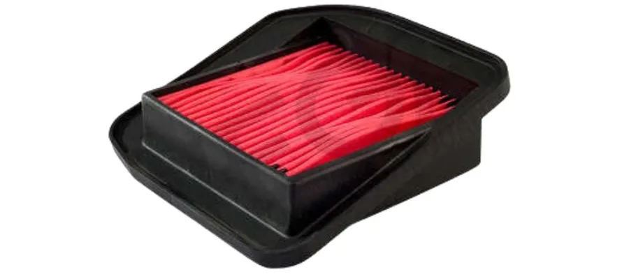
Filtro de ar CG 125 Titan 1994 a 2004 Wega
R$ 18,90no Pix

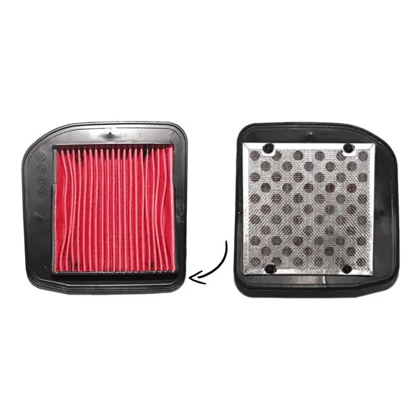
Filtro de ar CG 125 Fan/Titan/Cargo Vedamotors
R$ 23,90no Pix

Filtro de ar Biz 125 2006 a 2011 Wega
R$ 10,90no Pix

Filtro de ar Biz 125 e Biz 110i Wega
R$ 27,90no Pix

Filtro de ar Biz 125 e Biz 110i Vedamotors
R$ 29,90no Pix

Filtro de ar Biz 125 2006 a 2010 Vedamotors
R$ 18,90no Pix

Filtro de ar Biz 125 2005 a 2010 Metal Leve
R$ 10,90no Pix
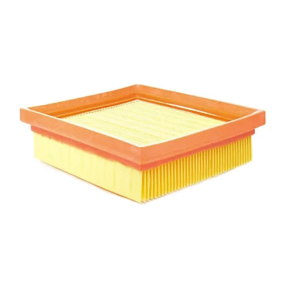
Filtro de ar Pop 110i e XRE 190 Vedamotors
R$ 19,90no Pix


Filtro de óleo Bros 125, CB 500X e outras Vedamotors
R$ 46,90no Pix
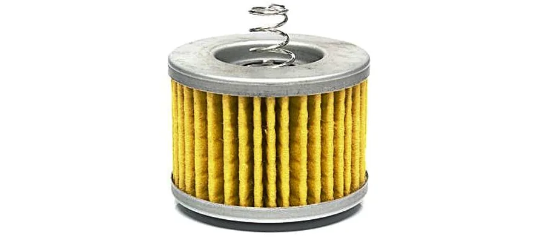
Filtro de óleo Fazer 150, Factor 150 e outras Vedamotors
R$ 15,90no Pix

Filtro de óleo Fazer 150, Crosser 150 e outras Wega
R$ 11,90no Pix

Filtro de ar Fazer 150, Crosser 150 e outras Wega
R$ 28,90no Pix


Filtro de ar Fazer 150, Crosser 150 e outras Vedamotors
R$ 29,90no Pix


Filtro de ar Factor 125 e YBR 125 Metal Leve
R$ 11,90no Pix

Filtro de óleo XRE 300, Twister 250 e outras Wega
R$ 10,90no Pix
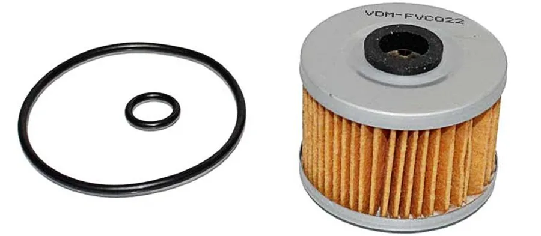
Filtro de óleo XRE 300, Twister 250 e outras Vedamotors
R$ 11,90no Pix

Filtro de ar XRE 300 2010 em diante Wega
R$ 38,90no Pix

Filtro de ar XRE 300 e XR 300L Vedamotors
R$ 44,90no Pix

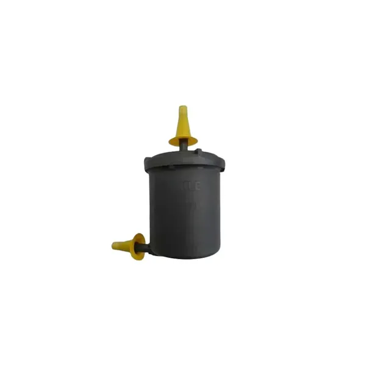
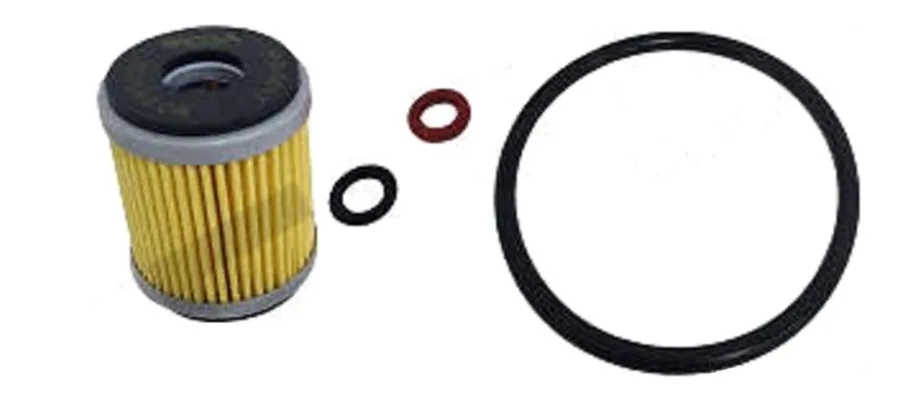
Filtro de óleo Fazer 250, Lander 250 e outras Wega
R$ 12,90no Pix

Filtro de óleo Fazer 250, Lander 250 e outras Vedamotors
R$ 13,90no Pix
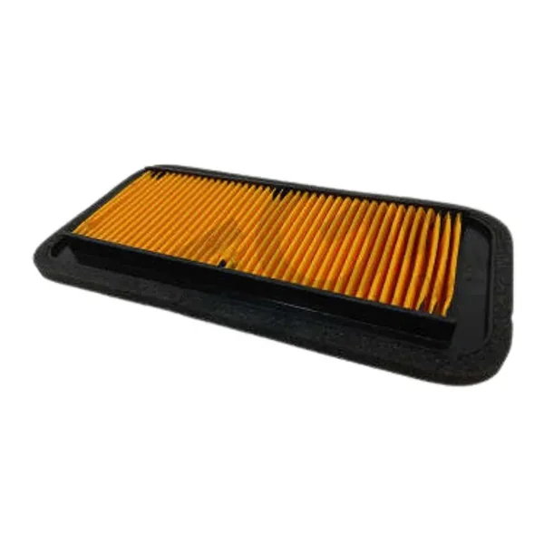
Filtro de ar Fazer 250 2018 em diante Wega
R$ 41,90no Pix
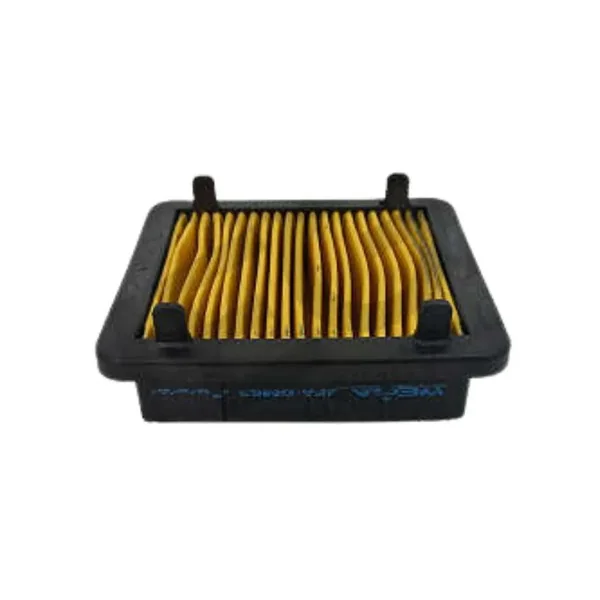
Filtro de ar Fazer 250, Lander 250 e outras Wega
R$ 27,90no Pix

Filtro de ar Twister 250 2015 a 2022 Wega
R$ 36,90no Pix

Filtro de ar Twister 250 2001 a 2008 Wega
R$ 35,90no Pix

Filtro de ar Twister 250 2015 a 2018 Vedamotors
R$ 36,90no Pix
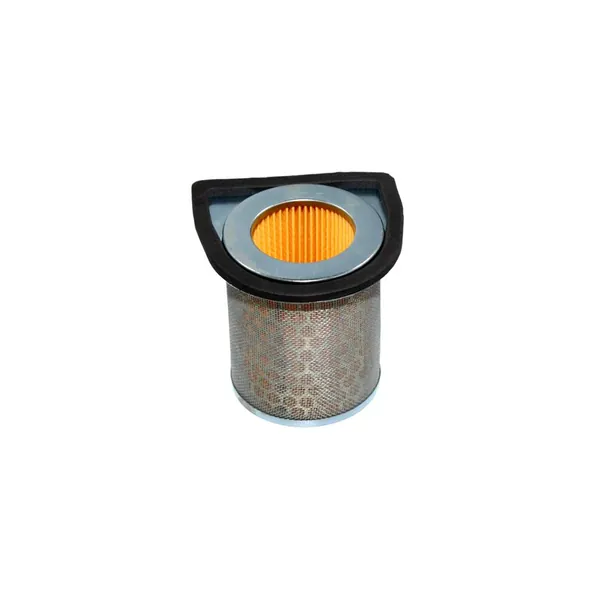
Filtro de ar Twister 250 2001 a 2008 Vedamotors
R$ 37,90no Pix

Filtro de ar Twister 250 2001 a 2008 Metal Leve
R$ 48,90no Pix

Filtro de ar Twister 300 2023 em diante Wega
R$ 58,90no Pix

Filtro de ar CB 300 2009 a 2015 Wega
R$ 39,90no Pix

Filtro de ar CB 300 2009 a 2015 Vedamotors
R$ 44,90no Pix
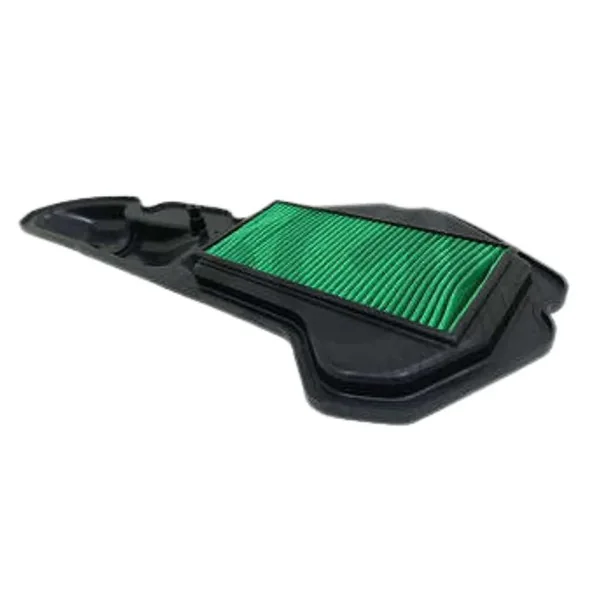
Filtro de ar PCX 150 2019 a 2022 Wega
R$ 49,90no Pix

Filtro de ar PCX 150 2015 a 2018 Wega
R$ 46,90no Pix
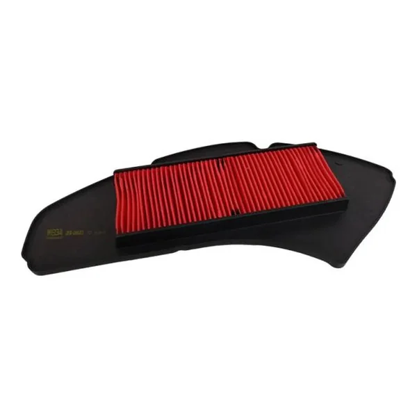
Filtro de ar NMax 160 2017 a 2022 Wega
R$ 53,90no Pix

Filtro de ar Tornado 250 2001 a 2009 Wega
R$ 11,90no Pix

Filtro de ar Tornado 250 2001 a 2009 Metal Leve
R$ 12,90no Pix

Filtro de ar Elite 125 2019 em diante Wega
R$ 44,90no Pix

Filtro de ar Lead 110 2010 a 2016 Wega
R$ 30,90no Pix

Filtro de ar Neo 125 2016 em diante Wega
R$ 34,90no Pix

Filtro de óleo MT-03, NC 750X e outras Wega
R$ 15,90no Pix
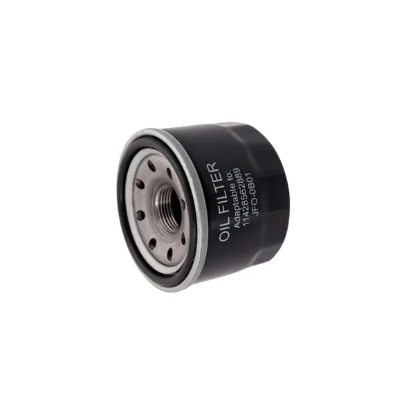
Filtro de óleo BMW G 310 2017 em diante Wega
R$ 39,90no Pix

Filtro de óleo EN 125 Yes, Intruder 125 e outras Wega
R$ 9,90no Pix
Não achou a peça?
Mande o modelo e o ano da moto no WhatsApp (27) 92000-6463. A gente confere na distribuidora e responde com o preço.